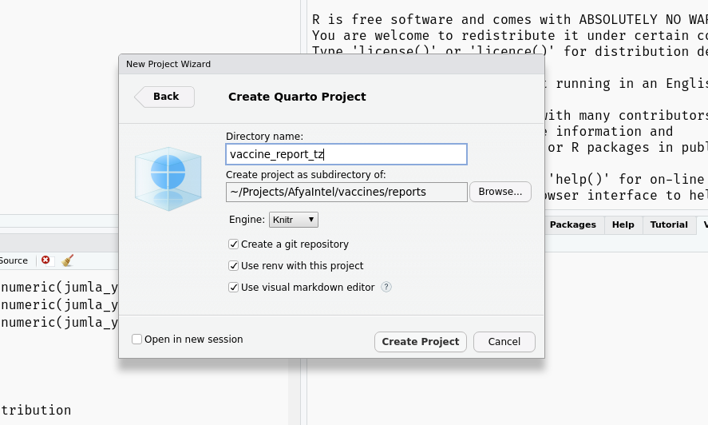
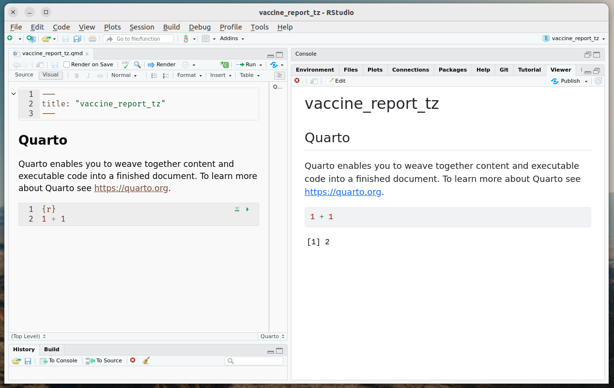
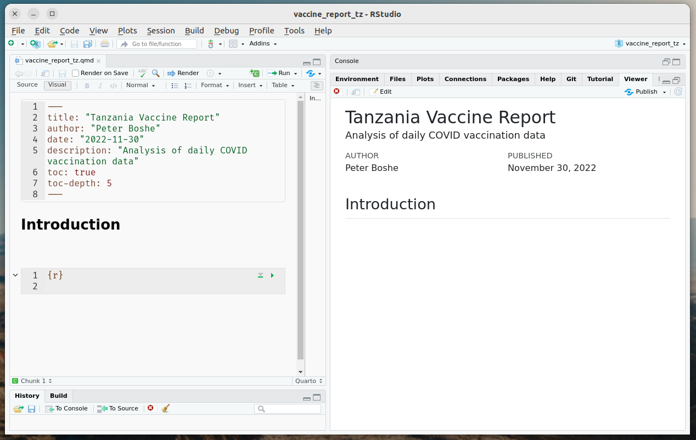

Introduction;
Most of the analytical work usually ends up as reports, so streamlining your workflow between analytics and sharing your report is pivotal in any data profession.
I recently came upon Quarto , an open-source language agnostic reporting tool that, I believe, should be in the back pocket of any data professional as it doesn’t matter the scripting language of choice, your reports will be amazing.
In this article however I will be using;
Ubuntu 22.04
R &Rstudio
Quarto
Server hosted by DigitalOcean
Pre-requisites
Procedures
Install Quarto
Launch Rstudio
Again you can use any text editor of choice as quarto has support for …….., I will however be using Rstudio for my project management.
Create new project
If you haven’t already, Install the quarto package….
Once installed you will have access to the features on your Rstudio Editor
Click on File > New Project > New Directory > Quarto Project > create a name for your new project & specify your file directory as follows;

If all went well you should now have your template quarto document launched in your new project.
All you need to do is click on render and see your first output

We can edit the yaml header (the first three lines in previous image) to for our specific report.

Much better, now that we have confirmed that works, we can do our analysis.
I am going to work with data from AfyaIntelligence to build my interactive dashboard.